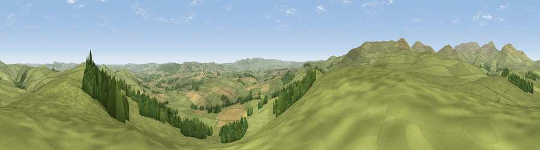

Viewpoint near Ingram
#3564 in England · top 16% of its area beats it · near IngramWhere it is
The exact computed spot (NT 98825 12825). Click the marker for map links.
The view, rendered

A 360° render of this exact spot computed from the terrain model, tree cover and land cover — summer colours, afternoon light, calibrated against photographs of famous viewpoints. Real trees, hedges and buildings will differ in detail.
The panorama
Grey silhouette: terrain skyline in each direction (720 bearings, Earth curvature and refraction included). Dashed green: skyline with trees (+15 m) and buildings (+8 m) as obstacles. Blue strip: how far the ground is visible on each bearing.
Where the view opens
Wedge length = distance to the farthest visible ground on that bearing (vegetation-aware). Rings at 10, 25 and 50 km.
What fills the view
81% grassland · 10% woodland · 8% cropland
Angular shares of the visible panorama (visual magnitude), not map area. Landscape diversity 0.28 (0–1 Shannon).
Key numbers
More beautiful places nearby
The staircase of upgrades: each row has a higher view potential than everything closer. Driving times are estimates from straight-line distance, calibrated against real road routing — check an actual route before setting out.
| Place | Direction | Drive | Score |
|---|---|---|---|
| Cochrane Pike | ENE · 2 km | ~6 min | 75.8 |
| Viewpoint near Ingram | ENE · 4 km | ~9 min | 78.2 |
| Wether Cairn [Wholhope Hill] | WSW · 5 km | ~11 min | 80.7 |
| Viewpoint near Ingram | NNW · 6 km | ~12 min | 82.0 |
| Viewpoint c12273_7856 | W · 6 km | ~13 min | 83.7 |
| Viewpoint c12396_7887 | NNW · 8 km | ~16 min | 85.7 |
| Viewpoint near Chillingham | NE · 16 km | ~28 min | 88.1 |
| Long Side | SW · 112 km | ~137 min | 89.5 |
55.40935, -2.02011 · source: screening · position refined by local search. Computed location — check access rights before visiting.